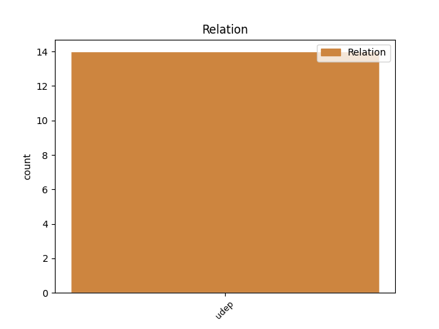
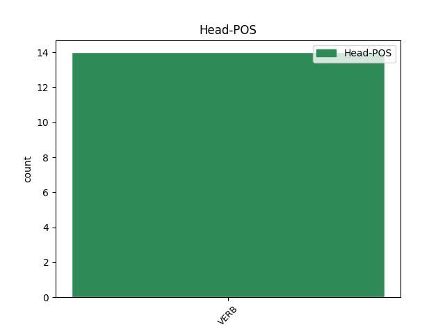
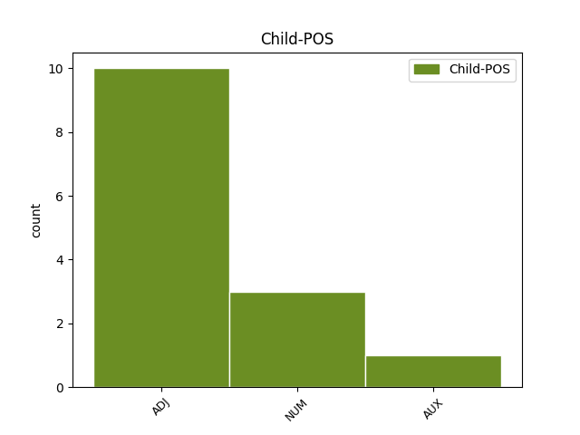

Distribution of features within this leaf



Agreement Rules sorted by frequency.
- When the dependent token is the underspecified dependency(udep) of the head token, and the head token is VERB and the dependent token is NUM.
1 а _ _ _ _ 0 _ _ _
2 стоалъ стояти VERB V- Aspect=Res|Case=Nom|Gender=Masc|Number=Sing|Strength=Strong|VerbForm=Part|Voice=Act 0 _ _ _
3 подъ _ _ _ _ 0 _ _ _
4 городомъ _ _ _ _ 0 _ _ _
5 два дъва NUM Ma Case=Acc|Gender=Masc|Number=Dual 2 udep _ ref=22
6 годꙋ _ _ _ _ 0 _ _ _
1 и _ _ _ _ 0 _ _ _
2 заповѣдавъ заповѣдати VERB V- Case=Nom|Gender=Masc|Number=Sing|Strength=Strong|Tense=Past|VerbForm=Part|Voice=Act 0 _ _ _
3 сѹщиимъ быти AUX V- Case=Dat|Gender=Masc|Number=Plur|Strength=Weak|Tense=Pres|VerbForm=Part|Voice=Act 2 udep _ ref=22
4 с _ _ _ _ 0 _ _ _
5 нимь _ _ _ _ 0 _ _ _
6 да _ _ _ _ 0 _ _ _
7 доправꙗть _ _ _ _ 0 _ _ _
8 тѣло _ _ _ _ 0 _ _ _
9 ѥго _ _ _ _ 0 _ _ _
10 въ _ _ _ _ 0 _ _ _
11 манастырь _ _ _ _ 0 _ _ _
12 ст҃ааго _ _ _ _ 0 _ _ _
13 и _ _ _ _ 0 _ _ _
14 блж҃енааго _ _ _ _ 0 _ _ _
15 оц҃а _ _ _ _ 0 _ _ _
16 нашего _ _ _ _ 0 _ _ _
17 ѳеѡдосиꙗ _ _ _ _ 0 _ _ _
18 и _ _ _ _ 0 _ _ _
19 тѹ _ _ _ _ 0 _ _ _
20 положать _ _ _ _ 0 _ _ _
21 ѥ _ _ _ _ 0 _ _ _
1 ѥгда _ _ _ _ 0 _ _ _
2 ли _ _ _ _ 0 _ _ _
3 видите _ _ _ _ 0 _ _ _
4 скѹдѣниѥ _ _ _ _ 0 _ _ _
5 сѹще _ _ _ _ 0 _ _ _
6 и _ _ _ _ 0 _ _ _
7 вьсѣмь вьсь ADJ Px Case=Ins|Gender=Neut|Number=Sing 8 udep _ ref=90
8 ѹмалѧюще умаляти VERB V- Case=Acc|Gender=Neut|Number=Plur|Strength=Strong|Tense=Pres|VerbForm=Part|Voice=Act 0 _ _ _
9 сѧ _ _ _ _ 0 _ _ _
10 тъгда _ _ _ _ 0 _ _ _
11 разѹмѣите _ _ _ _ 0 _ _ _
12 ꙗко _ _ _ _ 0 _ _ _
13 далече _ _ _ _ 0 _ _ _
14 ми _ _ _ _ 0 _ _ _
15 б҃а _ _ _ _ 0 _ _ _
16 быти _ _ _ _ 0 _ _ _
17 и _ _ _ _ 0 _ _ _
18 не _ _ _ _ 0 _ _ _
19 имѹща _ _ _ _ 0 _ _ _
20 дьрьзновениꙗ _ _ _ _ 0 _ _ _
21 молити _ _ _ _ 0 _ _ _
22 сѧ _ _ _ _ 0 _ _ _
23 къ _ _ _ _ 0 _ _ _
24 нѥмѹ _ _ _ _ 0 _ _ _
Disagree Examples:
1 а _ _ _ _ 0 _ _ _
2 ꙗзъ _ _ _ _ 0 _ _ _
3 ждалъ жьдати VERB V- Aspect=Res|Case=Nom|Gender=Masc|Number=Sing|Strength=Strong|VerbForm=Part|Voice=Act 0 _ _ _
4 в _ _ _ _ 0 _ _ _
5 новѣгородѣ _ _ _ _ 0 _ _ _
6 двѣ дъва NUM Ma Case=Acc|Gender=Fem|Number=Dual 3 udep _ ref=2
7 недли _ _ _ _ 0 _ _ _
8 посла _ _ _ _ 0 _ _ _
9 татарьскаго _ _ _ _ 0 _ _ _
10 ширвашина _ _ _ _ 0 _ _ _
11 асамъ _ _ _ _ 0 _ _ _
12 бѣга _ _ _ _ 0 _ _ _
1 симъ сии ADJ Pd Case=Ins|Gender=Neut|Number=Sing 3 udep _ ref=109.11
2 же _ _ _ _ 0 _ _ _
3 спуще сыпати VERB V- Case=Nom|Gender=Masc|Number=Plur|Strength=Strong|Tense=Pres|VerbForm=Part|Voice=Act 0 _ _ _
4 имъ _ _ _ _ 0 _ _ _
5 корсунѧне _ _ _ _ 0 _ _ _
6 подъкопавше _ _ _ _ 0 _ _ _
7 стѣну _ _ _ _ 0 _ _ _
8 градьскую _ _ _ _ 0 _ _ _
9 крадуще _ _ _ _ 0 _ _ _
10 сыплемую _ _ _ _ 0 _ _ _
11 перьсть _ _ _ _ 0 _ _ _
12 и _ _ _ _ 0 _ _ _
13 ношаху _ _ _ _ 0 _ _ _
14 к _ _ _ _ 0 _ _ _
15 собѣ _ _ _ _ 0 _ _ _
16 въ _ _ _ _ 0 _ _ _
17 градъ _ _ _ _ 0 _ _ _
18 сыплюще _ _ _ _ 0 _ _ _
19 посредѣ _ _ _ _ 0 _ _ _
20 града _ _ _ _ 0 _ _ _
1 въ _ _ _ _ 0 _ _ _
2 лѣт҃ _ _ _ _ 0 _ _ _
3 ҂ѕ҃ _ _ _ _ 0 _ _ _
4 х҃ _ _ _ _ 0 _ _ _
5 к҃ _ _ _ _ 0 _ _ _
6 ѕ _ _ _ _ 0 _ _ _
7 прѣстави _ _ _ _ 0 _ _ _
8 сѧ _ _ _ _ 0 _ _ _
9 дъмитръ _ _ _ _ 0 _ _ _
10 зивидиць _ _ _ _ 0 _ _ _
11 посадникъ _ _ _ _ 0 _ _ _
12 новъгородьскꙑи _ _ _ _ 0 _ _ _
13 иѹлѧ _ _ _ _ 0 _ _ _
14 въ _ _ _ _ 0 _ _ _
15 ѳ҃ _ _ _ _ 0 _ _ _
16 посадникъ _ _ _ _ 0 _ _ _
17 новъгородьскꙑи _ _ _ _ 0 _ _ _
18 посадницѧвъ посадьничати VERB V- Case=Nom|Gender=Masc|Number=Sing|Strength=Strong|Tense=Past|VerbForm=Part|Voice=Act 0 _ _ _
19 з҃ _ _ _ _ 0 _ _ _
20 мс҃ць _ _ _ _ 0 _ _ _
21 одинѹ одинъ NUM Ma Case=Acc|Gender=Fem|Number=Sing 18 udep _ ref=true
1 тог҃же тыиже ADJ Pd Case=Gen|Gender=Neut|Number=Sing 3 udep _ ref=true
2 б҃ъ _ _ _ _ 0 _ _ _
3 видѧ видѣти VERB V- Case=Nom|Gender=Masc|Number=Sing|Strength=Strong|Tense=Pres|VerbForm=Part|Voice=Act 0 _ _ _
4 наша _ _ _ _ 0 _ _ _
5 безакониꙗ _ _ _ _ 0 _ _ _
6 и _ _ _ _ 0 _ _ _
7 брт҃оненавидениѥ _ _ _ _ 0 _ _ _
8 и _ _ _ _ 0 _ _ _
9 непокорениѥ _ _ _ _ 0 _ _ _
10 дрѹг҃ _ _ _ _ 0 _ _ _
11 къ _ _ _ _ 0 _ _ _
12 дрѹг҃ _ _ _ _ 0 _ _ _
13 и _ _ _ _ 0 _ _ _
14 зависть _ _ _ _ 0 _ _ _
1 ѥгда _ _ _ _ 0 _ _ _
2 же _ _ _ _ 0 _ _ _
3 ли _ _ _ _ 0 _ _ _
4 пакы _ _ _ _ 0 _ _ _
5 кого _ _ _ _ 0 _ _ _
6 слышааше _ _ _ _ 0 _ _ _
7 бесѣдѹюща _ _ _ _ 0 _ _ _
8 дъва _ _ _ _ 0 _ _ _
9 ли _ _ _ _ 0 _ _ _
10 или _ _ _ _ 0 _ _ _
11 триѥ _ _ _ _ 0 _ _ _
12 съшедъше _ _ _ _ 0 _ _ _
13 сꙗ _ _ _ _ 0 _ _ _
14 въкѹпѣ _ _ _ _ 0 _ _ _
15 то _ _ _ _ 0 _ _ _
16 же _ _ _ _ 0 _ _ _
17 тѹ _ _ _ _ 0 _ _ _
18 ѹдаривъ _ _ _ _ 0 _ _ _
19 своею _ _ _ _ 0 _ _ _
20 рѹкою _ _ _ _ 0 _ _ _
21 въ _ _ _ _ 0 _ _ _
22 двьри _ _ _ _ 0 _ _ _
23 ти _ _ _ _ 0 _ _ _
24 тако _ _ _ _ 0 _ _ _
25 ѿхожааше _ _ _ _ 0 _ _ _
26 назнаменавъ назнаменати VERB V- Case=Nom|Gender=Masc|Number=Sing|Strength=Strong|Tense=Past|VerbForm=Part|Voice=Act 0 _ _ _
27 тѣмь тыи ADJ Pd Case=Ins|Gender=Neut|Number=Sing 26 udep _ ref=20
28 свои _ _ _ _ 0 _ _ _
29 приходъ _ _ _ _ 0 _ _ _